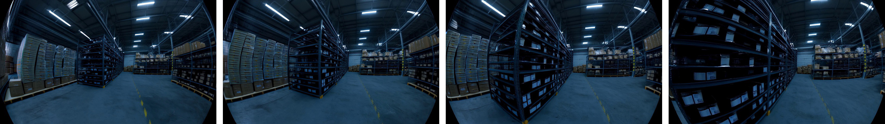
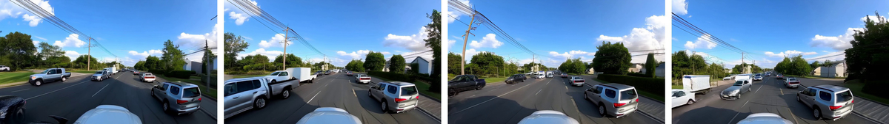
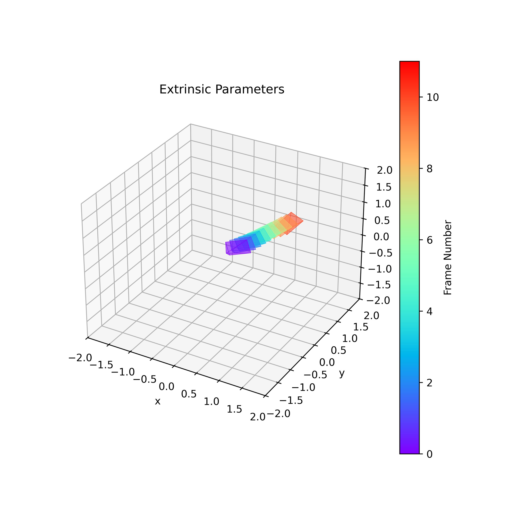
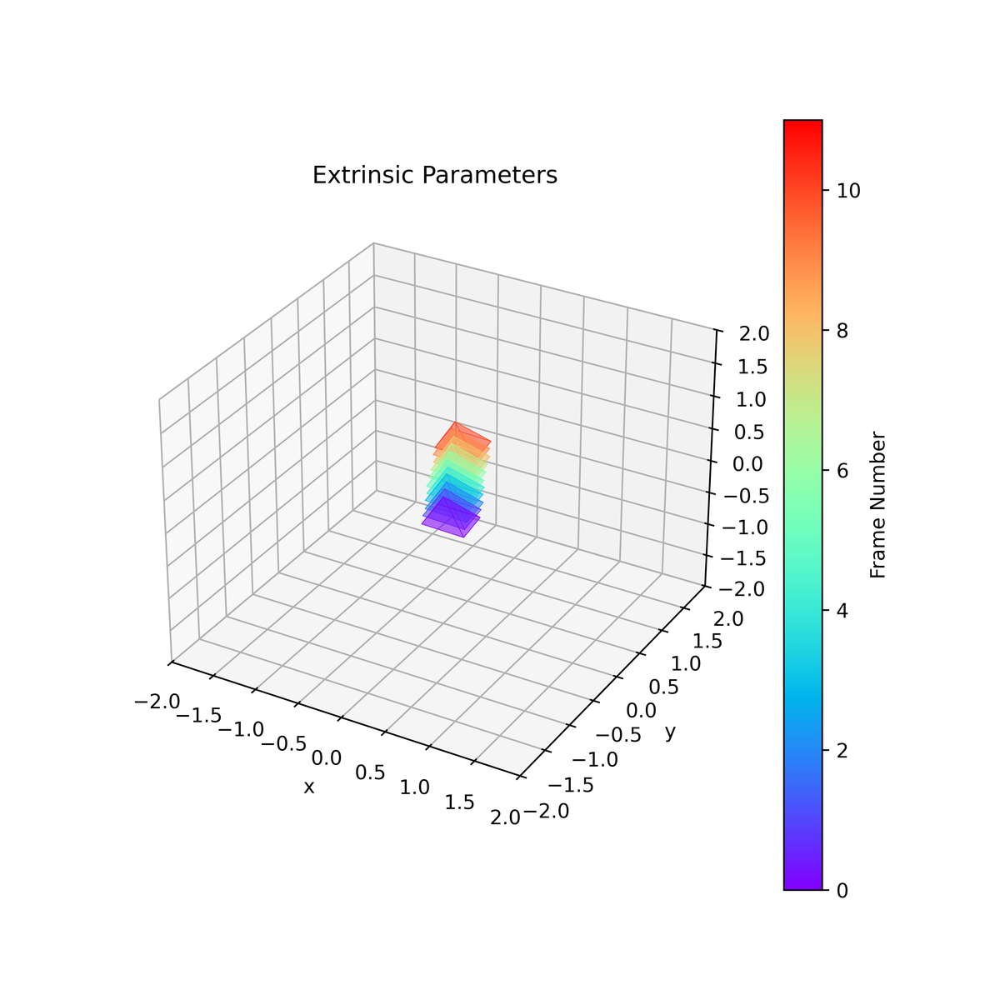

Unified Camera Positional Encoding for Controlled
简单摘要
然而，尽管 Transformer 主干取得了进展，大多数相机条件方法仍然依赖于简化的针孔假设。通过将每个标记表示为以局部光线坐标表示的观看光线，这种编码使注意力机制能够直接在光线空间而不是在相机级别运行。


然而，尽管 Transformer 主干取得了进展，大多数相机条件方法仍然依赖于简化的针孔假设。通过将每个标记表示为以局部光线坐标表示的观看光线，这种编码使注意力机制能够直接在光线空间而不是在相机级别运行。
核心创新
论文真正新增的设计，首先体现在 最近的工作引入了相对编码，直接在 Transformers 的注意力机制中对成对的相机关系进行建模，使它们对全局坐标选择保持不变。这一步不是换个说法重复问题定义，而是直接改动了方法主线的切入点。
进一步看，这将每个查询键交互替换为 , 其中 ，调节相对相机姿势的注意力。作者这样安排，是为了让前面的表示、约束或训练信号继续影响后面的求解链路。
进一步看，虽然相对光线编码可以实现跨异构相机的几何一致推理，但它不提供绝对方向的概念，导致第一帧方向不明确。作者这样安排，是为了让前面的表示、约束或训练信号继续影响后面的求解链路。
进一步看，如图所示，每个 DiT 块保留标准的自注意力，同时引入基于建议编码的相机条件分支。作者这样安排，是为了让前面的表示、约束或训练信号继续影响后面的求解链路。
进一步看，最近的工作引入了相对编码，直接在 Transformer 的注意力机制中对成对相机关系进行建模，使它们对全局坐标选择保持不变。作者这样安排，是为了让前面的表示、约束或训练信号继续影响后面的求解链路。
技术细节
围绕 技术总览，所有相机模型，无论其投影类型如何，都可以用统一的公式表示，将图像坐标映射到空间中的三维射线。相机不是假设特定的投影模型，而是由光线映射函数 定义，该函数为每个像素 生成光线原点和相机坐标系中的单位方向。最近的工作引入了相对编码，直接在 Transformers 的注意力机制中对成对的相机关系进行建模，使它们对全局坐标选择保持不变。
这将每个查询键交互替换为 , 其中 ，调节相对相机姿势的注意力。该投影公式捕获了完整的相机平截头体几何形状，但仅限于针孔相机。具体来说，对于每个图像标记，我们的目标是构造一个局部光线到世界矩阵，作为注意力级别特征变换的几何算子。这一步的作用，是把当前结果继续传给后面的模块或训练目标。


3 方法
围绕 3 方法，所有相机模型，无论其投影类型如何，都可以用统一的公式表示，将图像坐标映射到空间中的三维射线。相机不是假设特定的投影模型，而是由光线映射函数 定义，该函数为每个像素 生成光线原点和相机坐标系中的单位方向。最近的工作引入了相对编码，直接在 Transformers 的注意力机制中对成对的相机关系进行建模，使它们对全局坐标选择保持不变。
这将每个查询键交互替换为 , 其中 ，调节相对相机姿势的注意力。该投影公式捕获了完整的相机平截头体几何形状，但仅限于针孔相机。具体来说，对于每个图像标记 ，我们的目标是构造一个局部光线到世界矩阵 ，作为注意力级别特征转换的几何算子。这一步的作用，是把当前结果继续传给后面的模块或训练目标。
3.1 预赛
围绕 3.1 预赛，所有相机模型，无论其投影类型如何，都可以用统一的公式表示，将图像坐标映射到空间中的三维射线。相机不是假设特定的投影模型，而是由光线映射函数 定义，该函数为每个像素 生成光线原点和相机坐标系中的单位方向。最近的工作引入了相对编码，直接在 Transformers 的注意力机制中对成对的相机关系进行建模，使它们对全局坐标选择保持不变。
这将每个查询键交互替换为 , 其中 ，调节相对相机姿势的注意力。该投影公式捕获了完整的相机平截头体几何形状，但仅限于针孔相机。这一步的作用，是把当前结果继续传给后面的模块或训练目标。
$$ \boldsymbol{d}_{{u},{v}} = \mathbf{R} \boldsymbol{d}_{{u},{v}}^{\textrm{cam}}, \qquad \boldsymbol{o}_{{u},{v}} = \boldsymbol{t}. $$
这条并列公式把像素对应的相机射线方向先旋转到世界坐标系，再把射线起点设为相机平移向量。它说明后续相机编码不是抽象地处理姿态参数，而是直接建立在每条射线的几何表达上。
$$ \mathbf{D}_{t} = \mathbf{I}_{{d}/4} \otimes \mathbf{T}_{{i}({t})}^{\textrm{cw}}, $$
这条式子把当前相机的坐标变换按特征维度展开成块状矩阵，用来统一作用到注意力特征上。它相当于把相机位姿从几何空间搬到网络特征空间，让后续注意力层都能共享同一套相机条件。
$$ {O} = \operatorname{Attn}\big(\mathbf{D}^{\top}\odot {Q},\; \mathbf{D}^{-1}\odot {K},\; {V}\big). $$
这条式子把相机相关的几何编码直接注入注意力计算：查询、键和值都会先经过与视角有关的变换，再执行注意力聚合。这样模型在跨视图建模时，学到的就不只是外观相似性，还包含明确的相机几何关系。
$$ {O} = \mathbf{D} \odot \operatorname{Attn}\big(\mathbf{D}^{\top}\odot {Q},\; \mathbf{D}^{-1}\odot {K},\; \mathbf{D}^{-1}\odot {V}\big). $$
放在“方法”这一部分看，它重点在定义或约束 O 这一项。这条式子把相机相关的几何编码直接注入注意力计算：查询、键和值都会先经过与视角有关的变换，再执行注意力聚合。这样模型在跨视图建模时，学到的就不只是外观相似性，还包含明确的相机几何关系。
3.2 统一相机位置编码
围绕 3.2 统一相机位置编码，具体来说，对于每个图像标记 ，我们的目标是构造一个局部光线到世界矩阵 ，作为注意力级别特征转换的几何算子。我们通过定义锚定在相机中心的局部射线坐标系来构造，并通过正交基参数化。这种公式使注意力机制能够在光线空间中进行推理，而不是在相机帧内共享相同的位置编码。
这种表示通过天地分离和物体对齐等外观线索捕获相机旋转，同时还为广角镜头提供一些失真感知。对于纬度图计算，我们从 中定义的射线的世界空间方向开始。然后，纬度图对每条射线相对于水平面的仰角进行编码。这一步的作用，是把当前结果继续传给后面的模块或训练目标。
$$ \boldsymbol{r}_t = \big(\boldsymbol{o}_t,\, \boldsymbol{d}_t\big), \quad \boldsymbol{o}_t \in \mathbb{R}^3, \quad \boldsymbol{d}_t \in \mathbb{S}^2, $$
这条式子把一条光线写成“起点 + 方向”的成对表示。这样后面的相机编码不必直接操作原始内外参，而是统一围绕每条射线在空间里的几何意义来建模。
$$ \boldsymbol{z}_t = \boldsymbol{d}_t, \quad \boldsymbol{x}_t = \boldsymbol{y}^{\textrm{cam}}_{i(t)} \times \boldsymbol{z}_t, \quad \boldsymbol{y}_t = \boldsymbol{z}_t \times \boldsymbol{x}_t. $$
这条并列公式是在为每个视角构造一组正交局部坐标轴。作者先用观察方向确定主轴，再通过叉乘补齐其余两个轴，从而得到一个稳定的射线局部参考系。
$$ \mathbf{T}^{\textrm{wr}}_t = \begin{bmatrix} \mathbf{R}^{\textrm{wr}}_t & \boldsymbol{t}^{\textrm{wr}}_t \\ \mathbf{0}^\top & 1 \end{bmatrix}. $$
这条式子把旋转和平移写成齐次变换矩阵，方便后续统一执行坐标变换。它说明论文里的相机/射线几何不是零散地分别处理，而是被组织成标准的矩阵运算接口。
$$ \text{Lat}_t = \arctan2 \big(-d_{t,y},\, \sqrt{d_{t,x}^{2} + d_{t,z}^{2}}\big), $$
这条式子把三维方向转换成纬度角，用来生成可注入网络的绝对朝向信号。这样模型不仅知道相对相机关系，也能知道当前视角在全局方向上的位置。
$$ \text{Up}_t = \frac{[\Delta u_t,\; \Delta v_t]}{\|[\Delta u_t,\; \Delta v_t]\|}, $$
这条式子是在定义一个可直接计算的中间量：右侧把相对位置、方向、权重或比例关系组合起来，左侧则把这个组合结果记成后续模块要反复使用的变量。
3.3 用于 UCPE 注射的空间注意力适配器
其中编码 中定义的世界到光线变换，并使用 RoPE 构造以编码图像空间位置，两者都具有特征维度的一半。此外，空间注意力模块将 Lat-Up 贴图作为可选输入来提供绝对方向控制。如图所示，每个 DiT 块保留标准的自注意力，同时引入基于建议编码的相机条件分支。作者这样设计，是为了把这一节的输入、约束和输出关系讲清楚。
$$ \mathbf{D}^{\textrm{UCPE}}_t = \operatorname{blkdiag}\big( \mathbf{D}^{\textrm{Ray}}_t,\; \mathbf{D}^{\textrm{RoPE}}_t \big), $$
放在“方法”这一部分看，这条式子重点不是孤立地罗列符号，而是交代 D textrm UCPE t 如何承接前面的输入并把结果交给后续步骤。
实验结论
使用 FID、FVD 进行评估以实现数据集级保真度，使用 CLIP 分数进行文本视频对齐，使用 Q-Align 进行以用户为中心的质量评估。俯仰和横滚通过 GeoCalib 进行估计，并与地面实况视频估计进行比较，以获得绝对方向误差。我们将 UCPE 与几种代表性的相机调节方法进行比较。
UCPE 在两种配置中始终实现了更好的性能，展示了卓越的摄像机可控性和视频质量，同时仅在 7.0 版本的基础上增加了 3550 万个参数或 0.5% 的参数。

4.1 实验装置
使用 FID、FVD 进行评估以实现数据集级保真度，使用 CLIP 分数进行文本视频对齐，使用 Q-Align 进行以用户为中心的质量评估。每个生成的帧都被校正为具有真实失真的针孔视图，并由 ViPE 进行估计，报告平移 (TransErr)、旋转 (RotErr) 和运动一致性 (CamMC)。俯仰和横滚通过 GeoCalib 进行估计，并与地面实况视频估计进行比较，以获得绝对方向误差。
4.2 与以前方法的比较
我们将 UCPE 与几种代表性的相机调节方法进行比较。UCPE 在两种配置中始终实现了更好的性能，展示了卓越的摄像机可控性和视频质量，同时仅在 7.0 版本的基础上增加了 3550 万个参数或 0.5% 的参数。
4.3 消融研究
更高的压缩比可以提高视频质量指标，同时保持稳定的摄像机可控性。我们采用默认设置，它提供了性能和效率之间的最佳权衡。这种限制对于 PRoPE 来说尤其明显，它甚至在几个指标上表现不如 GTA，这凸显了 UCPE 相对光线编码作为跨不同相机镜头的统一表示的优势。
理解评价
如果把这篇论文放回问题背景里看，它真正的价值在于：变形金刚已成为 3D 感知、视频生成以及自动驾驶和人工智能世界模型的通用支柱，其中理解相机几何形状对于在三维空间中进行视觉观察至关重要。这说明作者不是只补一个局部模块，而是在重新组织问题该怎样被解决。
最能支撑这个判断的，还是实验给出的证据：然而，现有的相机编码方法通常依赖于简化的针孔假设，限制了现实世界相机中各种本征和镜头畸变的泛化。换句话说，这些设计并不只是概念上更完整，而是实实在在改变了最终结果。
当然，它离真正成熟的方案还有距离：当前方案的局限在于它仍然受制于计算资源、输入质量或场景复杂度，距离真正稳健的大规模部署还有差距。后续更值得继续推进的方向，是 我们提出了 UCPE，它通过相对光线编码和绝对方向线索联合建模姿势、内在特性和镜头畸变。